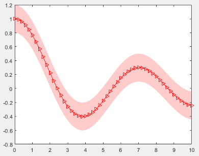

Write Constructors for Chart Classes
When you develop a chart as a subclass of the ChartContainer base
class, the base class provides a default constructor that accepts optional name-value
pair arguments for setting chart properties. For example, this command creates an
instance of a class called
ConfidenceChart.
ConfidenceChart('XData',x,'YData',y,'ConfidenceMargin',0.15,'Color',[1 0 0])
By writing a custom constructor method, you can provide an interface that accepts
individual argument values and optional name-value pair arguments. For example, you can
design a custom constructor to change the calling syntax for
ConfidenceChart so that both of these commands are valid ways to
create the
chart:
ConfidenceChart(x,y,0.15)
ConfidenceChart(x,y,0.15,'Color',[1 0 0])When you write the constructor method:
Specify the input arguments you want to support in the function declaration. Include
vararginas the last input argument to capture any property name-value pair arguments that the user specifies.Call the
ChartContainerconstructor before all other references to the chart object.
For example, the following constructor method for the
ConfidenceChart class performs these tasks:
Checks the number of input arguments and returns an error if the number is less than three.
Converts the
x,y, andmarginvalues to the name-value pair arguments that theChartContainerconstructor accepts, and stores the results inargs.Appends any user-specified name-value pair arguments to the end of
args.Passes
argsto theChartContainerconstructor method.
methods
function obj = ConfidenceChart(x,y,margin,varargin)
% Check for at least three inputs
if nargin < 3
error('Not enough inputs');
end
% Convert x, y, and margin into name-value pairs
args = {'XData', x, 'YData', y, 'ConfidenceMargin', margin};
% Combine args with user-provided name-value pairs
args = [args varargin];
% Call superclass constructor method
obj@matlab.graphics.chartcontainer.ChartContainer(args{:});
end
endExample: Confidence Bounds Chart with Custom Constructor
This example shows how to develop a chart that has a custom constructor that accepts single-value input arguments and optional name-value pair arguments. The chart plots a line with markers and a surrounding confidence margin.
Create a program file named ConfidenceChart.m in a folder that
is on the MATLAB® path. Define the class by following these steps.
| Step | Implementation |
|---|---|
Derive from the |
classdef ConfidenceChart < matlab.graphics.chartcontainer.ChartContainer |
Define public properties. |
properties
XData (1,:) double = NaN
YData (1,:) double = NaN
ConfidenceMargin (1,1) double = 0.15
MarkerSymbol (1,:) char = 'o'
Color (1,3) double {mustBeGreaterThanOrEqual(Color,0),...
mustBeLessThanOrEqual(Color,1)} = [1 0 0]
end |
Define private properties. |
properties(Access = private,Transient,NonCopyable)
LineObject (1,1) matlab.graphics.chart.primitive.Line
PatchObject (1,1) matlab.graphics.primitive.Patch
end |
Implement the custom constructor method that accepts the
|
methods
function obj = ConfidenceChart(x,y,margin,varargin)
% Check for at least three inputs
if nargin < 3
error('Not enough inputs');
end
% Convert x, y, and margin into name-value pairs
args = {'XData', x, 'YData', y, 'ConfidenceMargin', margin};
% Combine args with user-provided name-value pairs.
args = [args varargin];
% Call superclass constructor method
obj@matlab.graphics.chartcontainer.ChartContainer(args{:});
end
end |
Implement the |
methods(Access = protected)
function setup(obj)
% get the axes
ax = getAxes(obj);
% Create Patch and objects
obj.PatchObject = patch(ax,NaN,NaN,'r','FaceAlpha',0.2,...
'EdgeColor','none');
hold(ax,'on')
obj.LineObject = plot(ax,NaN,NaN);
hold(ax,'off')
end |
Implement the |
function update(obj) % Update XData and YData of Line obj.LineObject.XData = obj.XData; obj.LineObject.YData = obj.YData; % Update patch XData and YData x = obj.XData; obj.PatchObject.XData = [x x(end:-1:1)]; y = obj.YData; c = obj.ConfidenceMargin; obj.PatchObject.YData = [y+c y(end:-1:1)-c]; % Update colors obj.LineObject.Color = obj.Color; obj.PatchObject.FaceColor = obj.Color; % Update markers obj.LineObject.Marker = obj.MarkerSymbol; end end end |
Next, create an instance of a ConfidenceChart. Specify the
x- and y-coordinates, the margin value,
and a marker symbol.
x = 0:0.2:10; y = besselj(0,x); ConfidenceChart(x,y,0.20,'MarkerSymbol','>');
